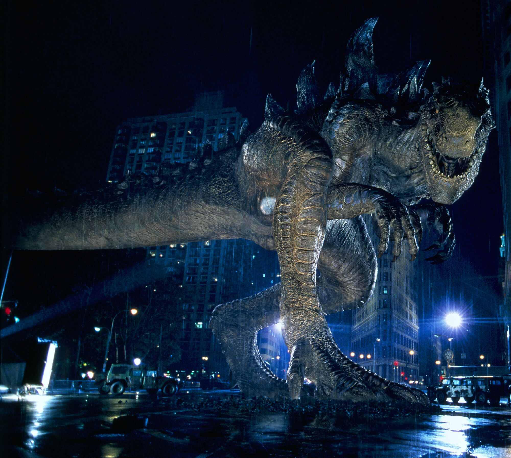
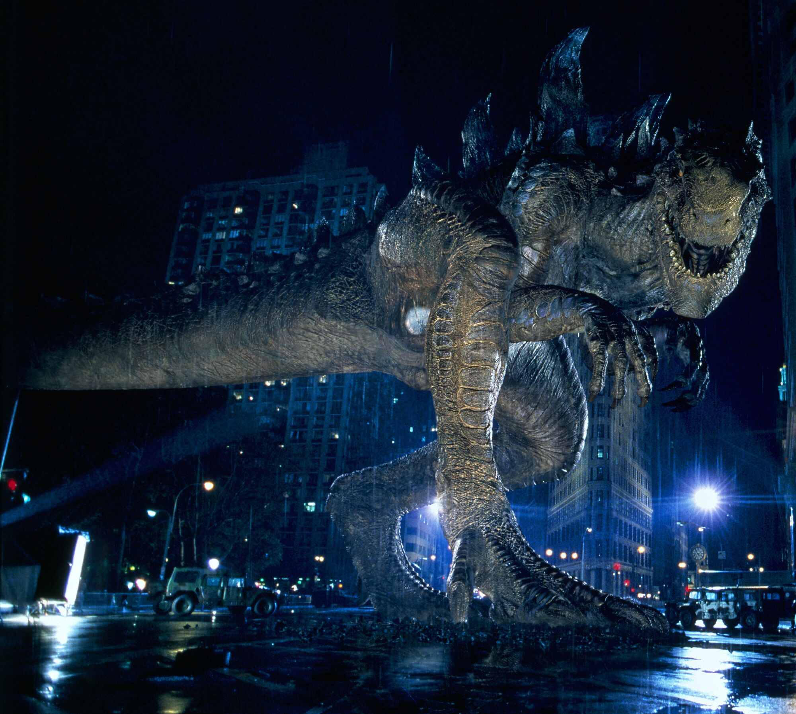

Sobre Godzilla
El nombre de Godzilla es una transcripción de Gojira (ゴジラ); una combinación de dos palabras japonesas: gorira (ゴリラ, gorila); y kujira (鯨 o クジラ, ballena). En ese punto el monstruo podría ser descrito como el cruce entre ambos animales: la ballena representa su capacidad acuática y su corpulencia; mientras que el gorila representa la fuerza bruta y el pensamiento estratégico que tiene a la hora de combatir.
Una leyenda de la compañía creadora Toho plantea que Godzilla era un apodo de un fisicoculturista que trabajaba en la empresa. La veracidad de la historia sigue en duda, debido a que han pasado 50 años desde la creación del film y es probable que el trabajador se haya retirado o incluso haya muerto. Jamás se han publicado fotografías suyas.
Al contrario de la creencia popular, la traducción Godzilla no fue una idea de Estados Unidos estadounidense. Antes de que Toho vendiera sus derechos, su división internacional comercializó en Japón la película con una impresión en inglés que recibió este nombre, siendo la transcripción fonética a dicho idioma de su nombre original.

 
